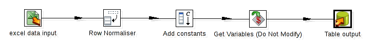

Construct the skeleton of the Transformation using Steps and Hops
Note: this step is for creating your own wrapper instead of using our templates.
If you are using our templates, please skip this step.
A Step is the minimal unit inside a Transformation. A wide variety of steps are available, grouped into categories like Input and Output, among others. Each step is designed to accomplish a specific function, such as reading a parameter or normalizing a dataset.
A Hop is a graphical representation of data flowing between two steps, with an origin and a destination. The data that flows through that hop constitutes the Output Data of the origin step, and the Input Data of the destination step. A hop has only one origin and one destination, but more than one hop could leave a step. When that happens, the Output Data can be copied or distributed to every destination. Likewise, more than one hop can reach a step. In those instances, the step has to have the ability to merge the Input from the different steps in order to create the Output
Here's how to start the Transformation:
To the left of the workspace is the Steps Palette. Select the Input category.
Drag the Excel file onto the workspace on the right.
Select the Transform category.
Drag the Row Normaliser icon to the workspace.
Drag the Add Constants icon to the workspace.
Now you will link the Excel file input with the Row Normaliser by creating a Hop:
